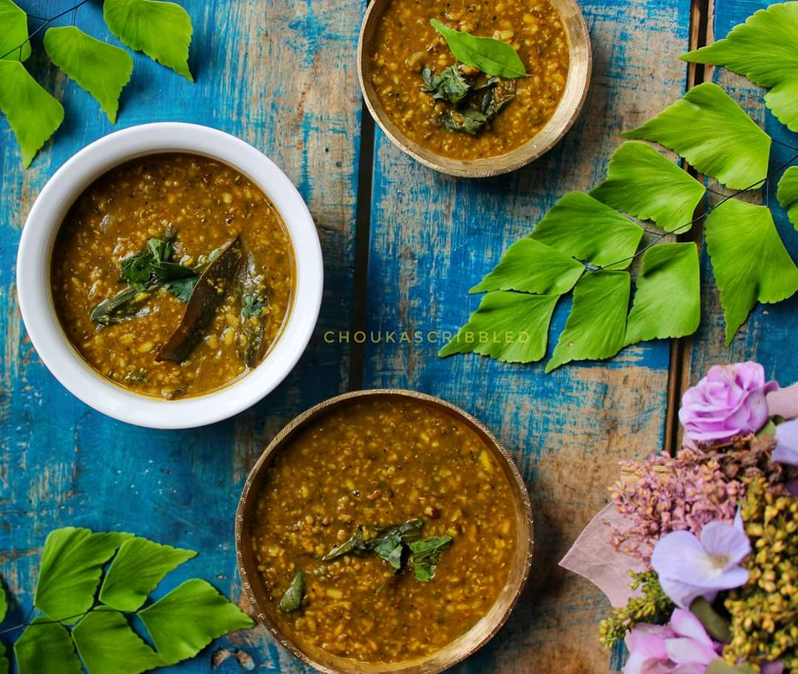

Assam is a state in northeastern India known for its wildlife, archeological sites and tea plantations. In the west, Guwahati, Assam’s largest city, features silk bazaars and the hilltop Kamakhya Temple. Umananda Temple sits on Peacock Island in the Brahmaputra river. The state capital, Dispur, is a suburb of Guwahati. The ancient pilgrimage site of Hajo and Madan Kamdev, the ruins of a temple complex, lie nearby.
Top 5 Foods of ASSAM
Khaar
Masor Tenga
Aloo Pitika
Duck Meat Curry
Spiced Silkworm
 Khar (alkali) is a traditional food adjuvant of all Assamese people and all the inhabitants of Assam. Natural Khar is prepared by filtering water through the ashes of pseudostem, corm and fruit skin of banana named Bhimkol in Assamese (a seeded banana variety). The parts of banana plant are dried under sun. Fully dried plant parts are burnt and the ashes are collected and filtered with water. The residue collected is Khar. Khar is used to make different types of dishes like fish curry, meat curry, papaya curry & different types of vegetable dishes etc. Khar is served as a part of the main Assamese meal. According to the belief of indigenous people Khar has also medicinal uses like cleaning stomachs and curing gastric problems etc.
 Masor Tenga is quintessentially Assamese. We eat this delicate,
tangy fish curry – Tenga means sour and Masor means with fish – in
almost every summer and winter meal. One reason for this is that it
isn’t complicated to make. With a handful of everyday ingredients,
it can be prepared in no more than 15-20 minutes. In summer, we add
fresh lime as the souring agent and in winter, wood apple or tangy
robust heritage tomatoes. I would recommend Masor Tenga to anyone
trying our cuisine for the first time: savour it with hot steaming
rice and a crisp fritter of eggplant or pumpkin as an accompaniment.
Masor Tenga is quintessentially Assamese. We eat this delicate,
tangy fish curry – Tenga means sour and Masor means with fish – in
almost every summer and winter meal. One reason for this is that it
isn’t complicated to make. With a handful of everyday ingredients,
it can be prepared in no more than 15-20 minutes. In summer, we add
fresh lime as the souring agent and in winter, wood apple or tangy
robust heritage tomatoes. I would recommend Masor Tenga to anyone
trying our cuisine for the first time: savour it with hot steaming
rice and a crisp fritter of eggplant or pumpkin as an accompaniment.
Pitika is an Assamese word which means mashed. Pitika dishes are very popular in Assam. It is a side dish and a signature recipe of Assamese cuisine. Assamese people love to eat vegetables by mashing them with chopped onion, chilli and mustard oil after boiling or smoking/grilling them. Its taste is very pure. Sometimes raw onion is used and sometimes fried onion is used in these recepies. We use mustard oil for all purposes as it can also be consumed as raw. Pickled chilli or pickled bhut jolokia adds more taste to these dishes.
Traditionally, this dish is considered to be a delicacy cooked and served on special occasions like Bihu, feast or for special guests. Even now-a-days, this dish is still integral part of any celebration or festivities.In Assam, the best season to eat duck meat is considered to be from Kaati Maah (late October) till Bohag (Early April). During this time frame, normally all domesticated ducks gorge on the freshly harvested rice grain residues and small fishes in the pond or bils (small lake) and become quite matured with meat and fat. In fact, in the villages of Assam, people used to select which duck to catch for dinner depending upon the speed at which a duck runs in its fol
Polu Or Leta are a popular dish in many parts of upper Assam. They are steamed or boiled silkworm pupae which are seasoned and eaten as a snack. Silkworm pupae are often served with drinks. They must be boiled in water before serving. Silkworm pupae is not always sold in the market and is usually sold in packets in street bazaars like dibrugarh chowkdiing ghuramora, bokel, borbaruah,although it is possible to buy the live variant for personal preparation